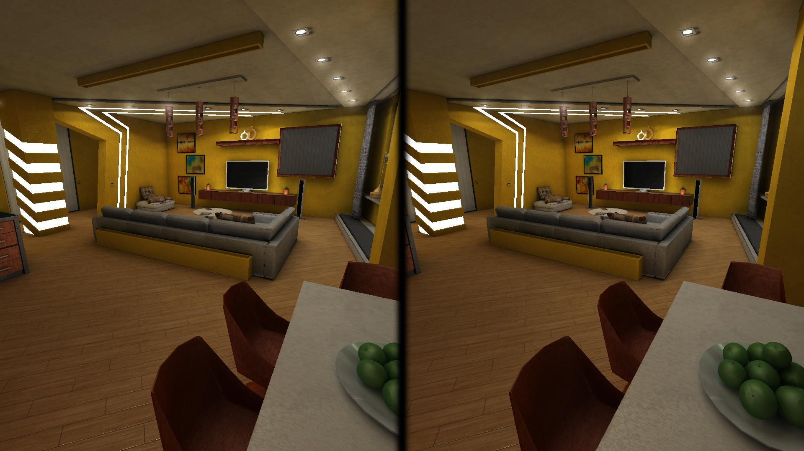

Zieke kinderen kunnen met een vr-bril mee-eten aan de keukentafel thuis of weer eens in hun slaapkamer rondkijken, wat een vertrouwd gevoel kan geven waardoor ze minder angst ervaren. Uit tests op de Spoedeisende Hulp blijkt dat VR zelfs zoveel afleiding kan geven, dat patiënten daadwerkelijk minder pijn voelen tijdens nare behandelingen. Al dat spelen ontspant en dankzij die ontspanning daalt de stress. Dit verbetert het herstel vervolgens ook. Dit werd bevestigd door kinder patiënten in het C.S. Mott Children’s Hospital, die een tijdje mochten spelen met de Vr-bril. Een patiënt gaf zijn pijngevoel eerst een 9 als cijfer, maar dat cijfer veranderde naar een 6 toen hij in een VR-wereld mocht rondlopen. Vlak na het afdoen van de bril gaf hij zijn pijngevoel een 7. De VR-bril had dus aardig veel invloed op zijn pijngevoel.
